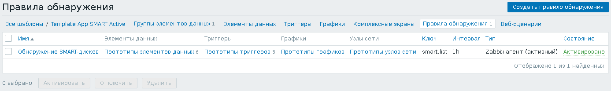

Специально для контроля исправности жёстких дисков была придумана технология S.M.A.R.T.. Если все жёсткие диски компьютера включены в состав RAID-массива с избыточностью, то следить за параметрами S.M.A.R.T. обычно не имеет особого смысла - о выходе из строя одного из жёстких дисков можно узнать по факту. Однако, не всегда бывает оправдано использовать RAID-массивы. Иногда это бывает малокритичный сервер, на котором не хранится никаких данных и который можно довольно быстро настроить с нуля на новом компьютере. А может быть это один из однотипных серверов, между которыми распределяется общая нагрузка. В таких случаях может оказаться полезным отслеживать состояние жёсткого диска через S.M.A.R.T., чтобы устранить проблему не в режиме аварийно-восстановительных, а в режиме планово-профилактических работ, заранее подготовив замену, с минимальным перерывом в обслуживании и во время наименьшей нагрузки (или её отсутствия).
Для контроля параметров S.M.A.R.T. на компьютере понадобится настроенный Zabbix-агент, а также установленные пакеты sudo и smartmontools.
Во-первых, при помощи команды visudo, разрешим пользователям из группы zabbix выполнять команды для контроля состояния диска от имени пользователя root:
%zabbix ALL=(ALL) NOPASSWD:/usr/sbin/smartctl --scan, \
/usr/sbin/smartctl -i *, \
/usr/sbin/smartctl -H *, \
/usr/sbin/smartctl -A *
Во-вторых, добавим в файл конфигурации Zabbix-агента /etc/zabbix/zabbix_agentd.conf следующие "пользовательские параметры":
UserParameter=smart.list,/usr/bin/sudo /usr/sbin/smartctl --scan | /usr/bin/awk 'BEGIN { printf "{\"data\": ["; } { if (NR != 1) printf ","; printf "{\"{#SMART}\": \"%s\"}", $1; } END { printf "]}"; }'
UserParameter=smart.model[*],/usr/bin/sudo /usr/sbin/smartctl -i $1 2>&1 | /usr/bin/awk -F: '$$1 ~ /^Device Model$/ { gsub(/(^ +| +$)/, "", $$2); print $$2; }'
UserParameter=smart.serial[*],/usr/bin/sudo /usr/sbin/smartctl -i $1 2>&1 | /usr/bin/awk -F: '$$1 ~ /^Serial Number$/ { gsub(/(^ +| +$)/, "", $$2); print $$2; }'
UserParameter=smart.health[*],/usr/bin/sudo /usr/sbin/smartctl -H $1 2>&1 | /usr/bin/awk 'BEGIN { h = 0; } / (OK|PASSED)$/ { h = 1; } END { print h; }'
UserParameter=smart.reallocated[*],/usr/bin/sudo /usr/sbin/smartctl -A $1 2>&1 | /usr/bin/awk '/^ 5 / { print $$10; }'
UserParameter=smart.pending[*],/usr/bin/sudo /usr/sbin/smartctl -A $1 2>&1 | /usr/bin/awk '/^197 / { print $$10; }'
UserParameter=smart.temperature[*],/usr/bin/sudo /usr/sbin/smartctl -A $1 2>&1 | /usr/bin/awk '/^194 / { print $$10; }'
После внесения изменений в конфигурацию Zabbix-агента, не забудьте его перезапустить:
# /etc/init.d/zabbix-agent restart
Я подготовил два шаблона для контроля параметров S.M.A.R.T.:
В обоих шаблонах имеется элемент данных для низкоуровневого обнаружения, который находит все имеющиеся в системе диски, поддерживающие S.M.A.R.T.:
Есть прототипы элементов данных, с помощью которых контролируется: статус здоровья диска, количество перемещённых секторов, секторов, ожидающих перемещения, температура жёсткого диска. Значения этих данных для каждого из жёстких дисков снимаются раз в 10 минут. Раз в час для каждого жёсткого диска запрашивается модель и серийный номер - они могут пригодиться, когда понадобится заменить один из жёстких дисков:
Имеется три прототипа триггеров, который будут созданы для каждого обнаруженного жёсткого диска. Самый главный триггер срабатывает в том случае, когда S.M.A.R.T. явным образом сообщает о неисправности диска. Два других триггера срабатывают при превышении лимита неисправных секторов или секторов, ожидающих перемещения:
Лимиты для двух последних триггеров можно задать через соответствующие макросы - {$SMART_REALLOCATED_LIMIT} и {$SMART_PENDING_LIMIT}:

На картинке заданы нулевые лимиты, поэтому триггеры будут срабатывать при появлении хотя бы одного подозрительного сектора на диске. Если вы посчитали, что проблемных секторов не так уж и много, то можно задать новые значения макросов индивидуально в самом наблюдаемом узле Zabbix. К сожалению, нельзя задать разные лимиты для разных жёстких дисков - макросы действуют на все диски в наблюдаемом узле. С другой стороны, если лимит повысили для одного жёсткого диска, то логично что и на другом жёстком диске не стоит бить тревогу, пока этот лимит не будет достигнут.
S.M.A.R.T. умеет отдавать массу другой информации о состоянии диска. Довольно подробный список параметров есть на уже упомянутой странице в Wikipedia: S.M.A.R.T. Не всегда S.M.A.R.T. успевает сообщить о неисправности жёсткого диска до того, как им и в самом деле становится невозможно пользоваться. Именно для этого я и добавил контроль двух выбранных мной параметров - количества перемещённых секторов и количества секторов, ожидающих перемещения. В случае роста этих счётчиков, можно заранее понять, что скоро S.M.A.R.T. может сообщить о неисправности диска. Иногда, правда, жёсткие диски продолжают исправно работать долгие годы, даже если на них уже есть десятки или даже сотни неисправных секторов. Поэтому вместо использования конкретных значений порогов срабатывания триггеров я и предусмотрел в шаблоне макросы, чтобы пороги можно было настраивать по месту. Лучше, всё же, не ждать появления десятков или сотен неисправных секторов, а менять диск заранее.
Наконец, снимаемые данные выглядят следующим образом: